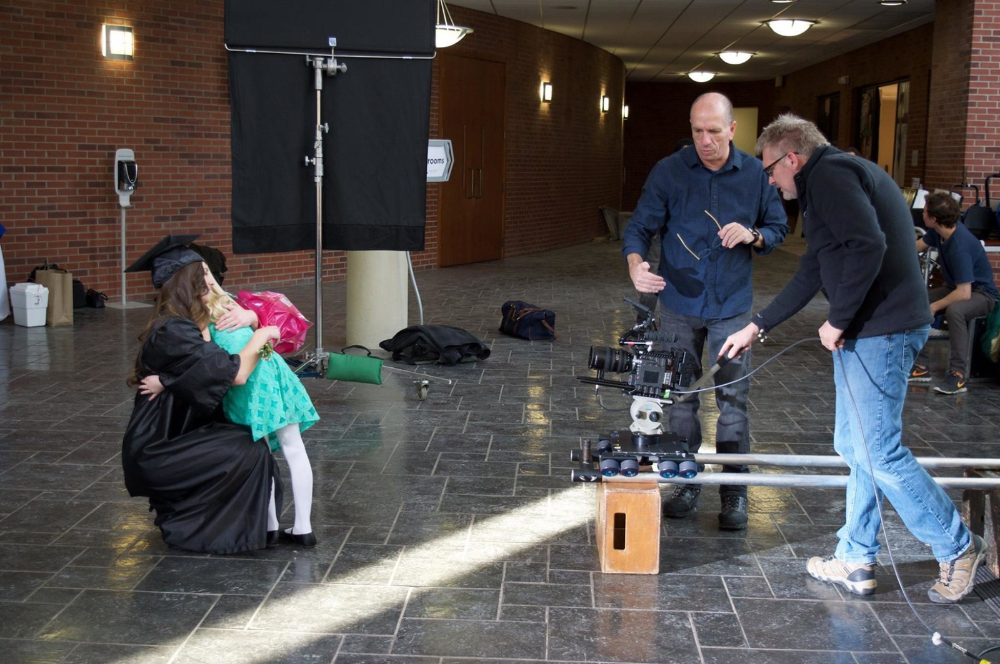

01NOMADS
Documentary · Film
The New American Nomads
A firsthand documentary exploring modern RV life, seasonal work, and the people redefining home on the road.
In production
Film · History · Music · Live
Big4Arts brings broadcast experience, cinematic craft, and emerging creative tools together to make work that moves people.
Independent creative studio
We preserve yesterday, capture the moment, and imagine what comes next—across film, sound, stage, and screen.
Selected work
Documentary · Film
A firsthand documentary exploring modern RV life, seasonal work, and the people redefining home on the road.
In productionHistorical Documentary
Reconstructing Louisville’s violent election day of 1855 through archival research and richly detailed historical imagery.
Children’s Series · History
A storyteller, her dog Stella, and a time tunnel invite young viewers into history with wonder, warmth, and adventure.
Series developmentOriginal Musical · Stage
An original LGBTQ+ musical about chosen family, courage, and the freedom to step into the light as your authentic self.
Visit WBTD.clubLive Production · Technology
Mobile multi-camera broadcasting that brings professional live video, graphics, and storytelling to audiences anywhere.
Building the future of liveProject artwork is intentionally stylized for this preview. Final production stills and video links can be added during the next pass.
What we do
From a first spark to a finished program, Big4Arts combines seasoned production judgment with an adventurous creative eye.
Development, field production, directing, cinematography, editing, and delivery.
Research-led visual storytelling that brings places, people, and pivotal moments back to life.
Original songs, visual identities, promotional artwork, and story worlds built to connect.
Portable broadcast production, live switching, graphics, field audio, and streaming.
Thoughtful new tools in service of human ideas—from concept development to vivid visual campaigns.
Built on experience
Big4Arts is led by Aaron Hutchings, an award-winning producer, director, editor, and videographer whose career spans local news, public television, documentary, live events, film restoration, education, and independent production.
The tools keep changing. The mission does not: tell stories that matter, and tell them beautifully.
Let’s make something unforgettable